Chapter 3. 조건문¶
'쉽게 풀어쓴 C언어 Express - 천인국' 6장 학습 내용
1절. 조건문
2절. if문
3절. 조건연산자
4절. switch문
5절. if문과 switch문
1절. 조건문¶
조건문¶
- 프로그램의 선택 구조
- 제어문에 속하며, 제어문은 조건문과 반복문을 가지고 있다.
제어구조¶
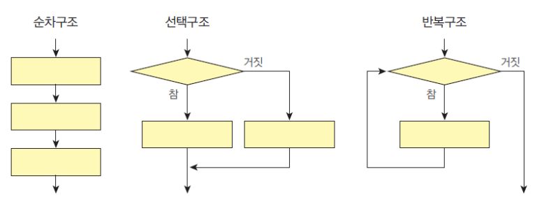
2절. if문 (if ... else ...)¶
if 문¶
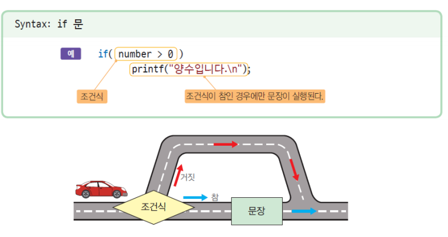
if 문 예제¶
// 온도 체크 예제
if (temperature < 0) // 변수 temperature이 0보다 낮다면
printf("현재 온도는 영하입니다.\n"); // "현재 온도는 영하입니다." 를 출력한다.
printf("현재 온도는 %lf도 입니다.\n", temperature);
오류 주의¶
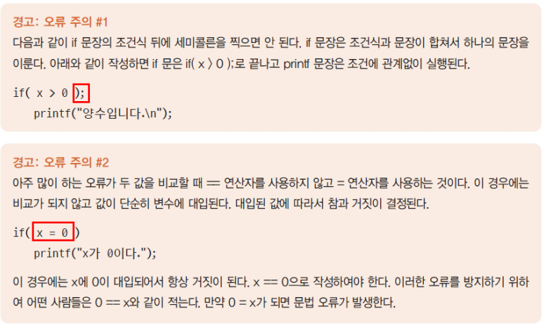
실수 비교¶
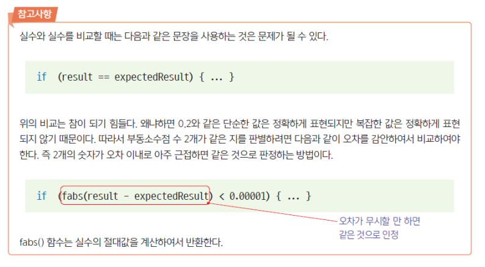
복합문 (compound statement)¶
- 중괄호를 사용하여 문장들을 그룹핑
- 블록(block)이라고도 한다.
- 단일문 대신 들어갈 수 있다.
if-else 문¶
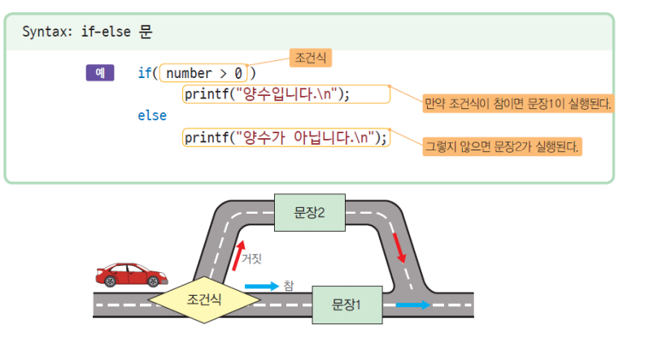
if-else 문 예제¶
if (score >= 60)
printf("Pass\n");
else // score < 60
printf("NONE-Pass\n");
// = "(score >= 60)? printf("Pass\n"): printf("NONE-Pass\n");"
if (score >= 60){
printf("합격입니다.\n");
printf("장학금을 받을 수 있습니다.\n");
}
else{
printf("불합격입니다.\n");
printf("다시 도전하세요.\n");
}
중첩 if¶
- if 문에 다시 if 문이 포함된다.
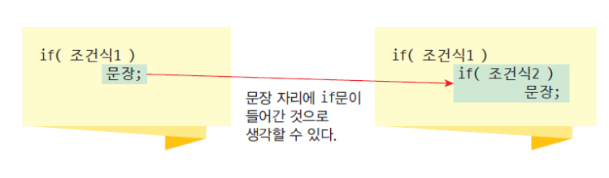
중첩 if 문 예제¶
// if -> if...else...
if (score >= 80)
if (score >= 90)
printf("당신의 학점은 A입니다.\n");
else
printf("당신의 학점은 B입니다.\n");
연속적 if¶
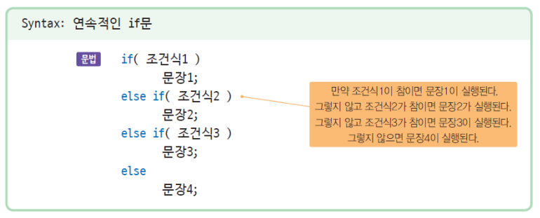
3절. 조건연산자¶
조건연산자 ?¶
- 간단한 if - else 문은 조건연산자를 사용하여 표현할 수도 있다. ```C bonus = ((years > 30) ? 500 : 300);
4절. switch문¶
switch문¶
- 제어식의 값에 따라서 여러 경로 중에서 하나를 선택할 수 있는 제어 구조
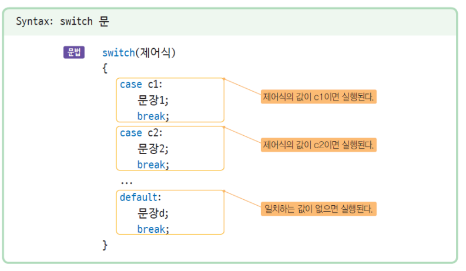
switch문 예제¶
```C int main(void){ int number; printf("정수를 입력하시오:"); scanf("%d", &number);
switch(number){
case 0:
printf("없음\n");
break;
case 1:
printf("하나\n");
break;
case 2:
printf("둘\n");
break;
default:
printf("많음\n");
break;
}
} ```
break가 생략되는 경우¶
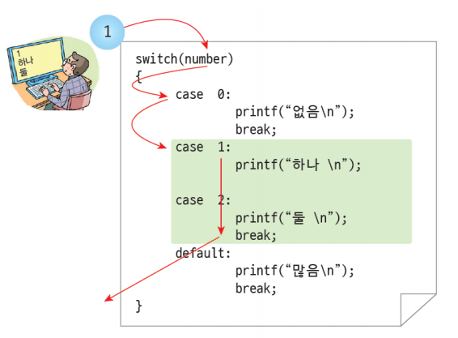
break가 의도적으로 생략되는 경우¶
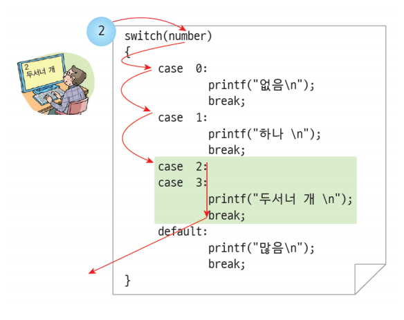
default¶
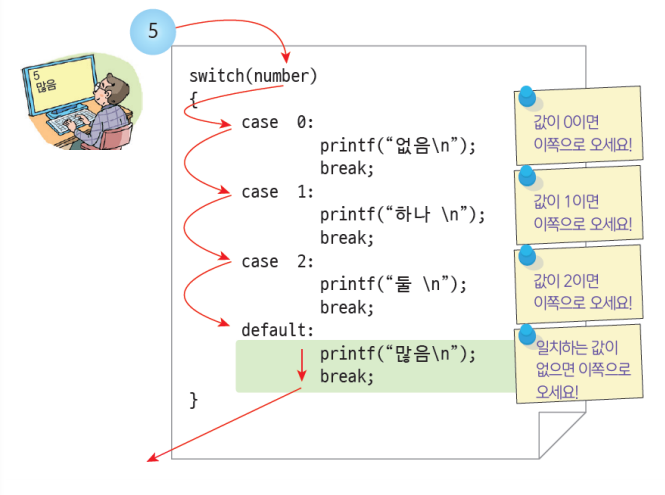
switch문 주의할 점¶
- 제어식의 값은 반드시 정수형으로 계산한다.
- 수식의 값이 정수형으로 나오지 않는다면 switch 문을 사용할 수 없다.
- case 절에 실수, 변수, 수식, 문자열을 사용하면 컴파일 오류
- 다만 문자는 아스키코드로 표현되고, 아스키코드는 정수이므로 사용 가능하다.
- 단, 문자열은 사용할 수 없다.
switch문 사용 오류 예제¶
C
switch(number) {
case x: // 변수는 사용할 수 없다.
printf("없음\n");
break ;
case (x+2): // 변수가 들어간 수식은 사용할 수 없다.
printf("하나\n");
break ;
case 0.001: // 실수는 사용할 수 없다.
printf("둘\n");
break ;
case "001": // 문자열은 사용할 수 없다.
printf("많음\n");
break;
}
5절. if문과 switch문¶
if-else문과 switch문¶
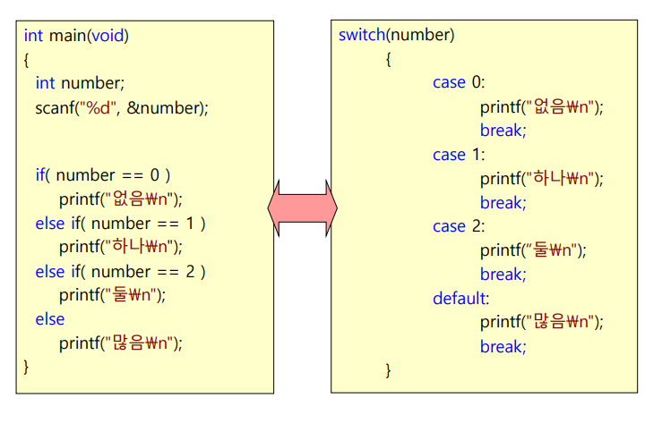